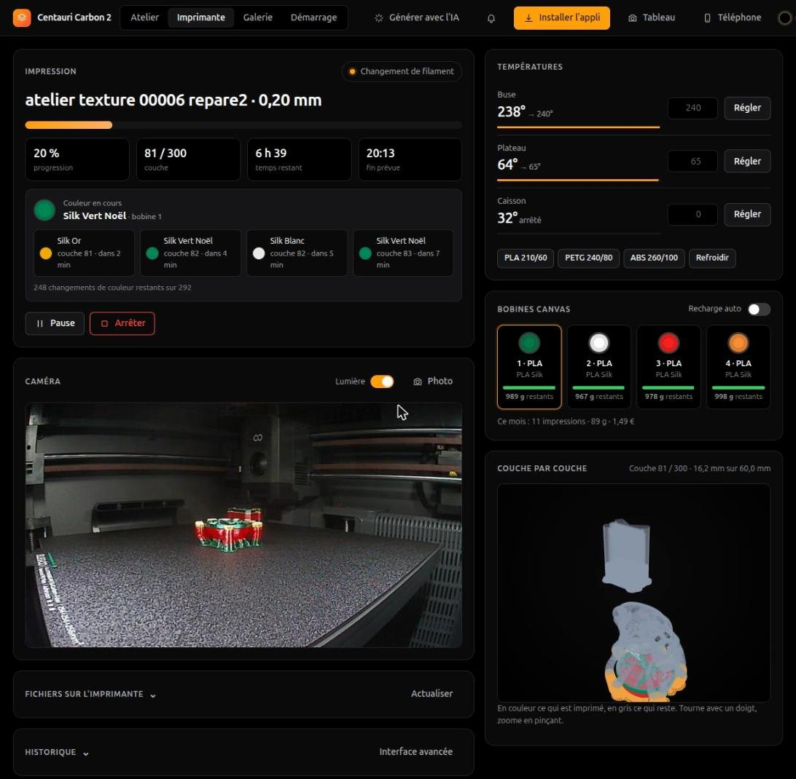
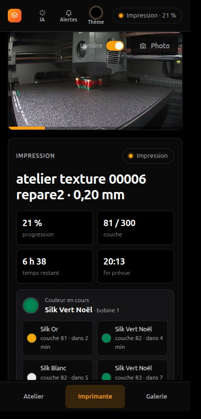
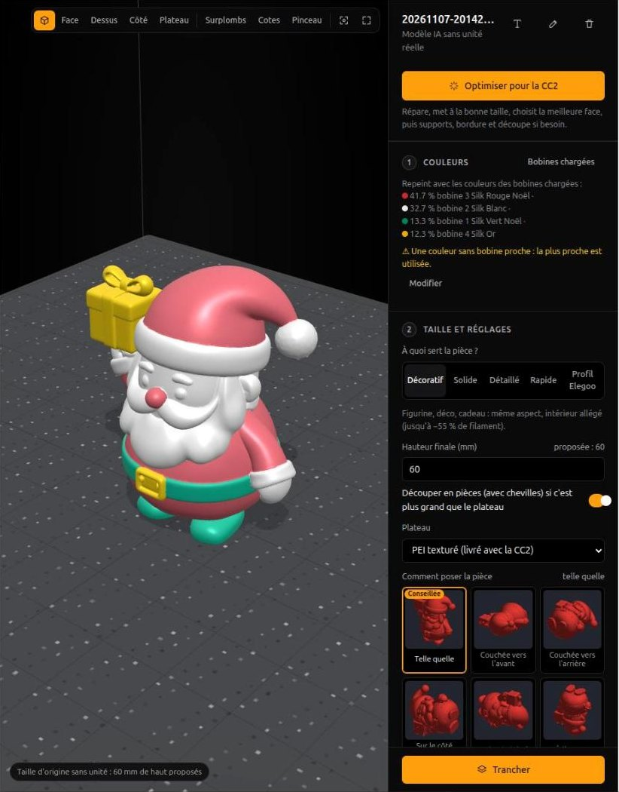
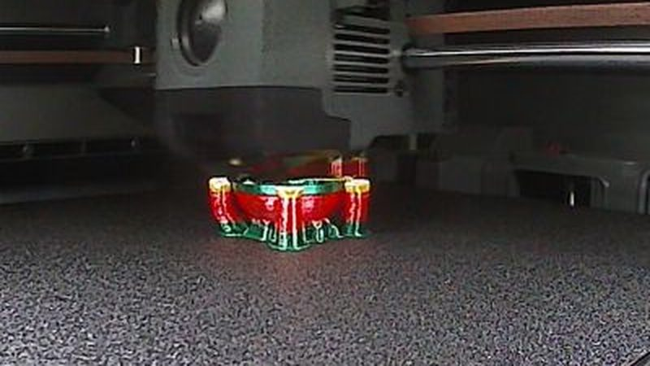
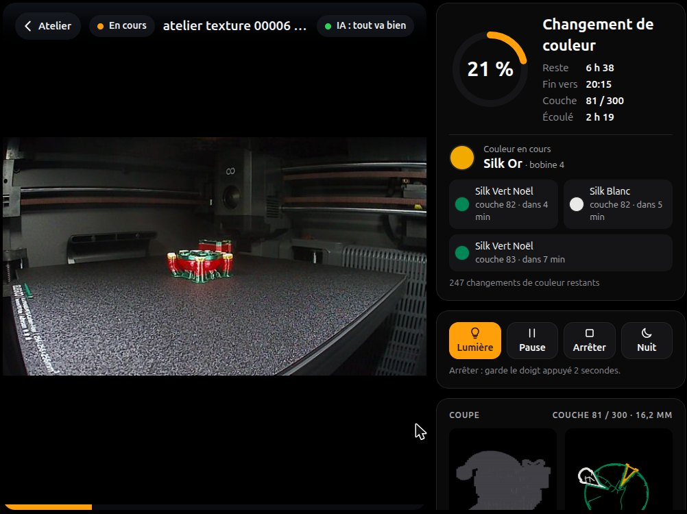

Pour l'Elegoo Centauri Carbon 2 et son CANVAS
Prépare. Imprime.
Suis chaque couche.
Un atelier open source qui tourne chez toi : du modèle en quatre couleurs à la pièce sur le plateau, depuis le PC, le téléphone ou une tablette au mur.


Préparer
Ton modèle, aux couleurs de tes bobines.
Dépose un STL, un 3MF ou un modèle généré par IA. L'atelier associe chaque couleur à une bobine du CANVAS, le met à la bonne taille et choisit la meilleure face à poser.
- « Optimiser pour la CC2 » : réparation, taille, pose, supports
- Une purge dosée entre deux couleurs, sans marbrage
- Tranché par OrcaSlicer avec les profils de la CC2

Suivre
Chaque couche, chaque couleur.
La caméra en direct, la pièce qui monte en 3D, la couleur en cours et les prochaines avec leur délai. Une IA regarde la caméra et met en pause si elle voit des spaghettis.
- Prévenu à la fin, puis quand le plateau est froid
- Timelapse et photo de chaque impression dans la galerie
- Un bilan après coup : la correction est proposée la fois suivante

Le père Noël de la capture, couche 81 sur 300, en Silk vert, rouge, blanc et or.
Partout
Dans ta poche. Ou au mur.
Une appli à installer sur le téléphone, en HTTPS et protégée par un code. Un tableau de bord pour une vieille tablette, avec la vue en coupe de l'impression. Hors de chez toi, par Tailscale : aucun port ouvert.

Ce qu'il fait. Ce qu'il ne fait pas.
Il fait
- Tout le chemin pour une CC2 avec CANVAS, testé sur une vraie machine
- Tourner sur un PC ou un petit serveur de la maison, sans cloud
- Garder ta bibliothèque, tes bobines, tes coûts et tes bilans
- Créer des pièces sans CAO : Gridfinity, visserie, décoration à ton nom…
Il ne fait pas
- Remplacer le firmware : il parle à la CC2 comme elle le permet en LAN
- Garantir l'avenir : une mise à jour du firmware peut casser une commande
- Tourner sous Windows ou macOS : Linux x86-64 pour l'instant
- Venir d'Elegoo : c'est un projet personnel
Essayer
Deux minutes, sans imprimante.
Le simulateur démarre une CC2 virtuelle avec l'atelier : caméra, CANVAS de quatre bobines, impressions en accéléré.
# Linux, Python 3.12 et uv git clone https://github.com/JEANPHI5507/atelier-cc2 && cd atelier-cc2 uv sync && make slicer uv run cc2 simulateur # puis http://localhost:8788/lab/ # avec ta CC2 (mode LAN), ouvert au téléphone uv run cc2 --control dash --reseau
Questions fréquentes
Comment imprimer en plusieurs couleurs avec le CANVAS de la Centauri Carbon 2 ?
Dépose un modèle coloré (3MF, GLB, OBJ) dans l'atelier : chaque couleur est associée à la bobine la plus proche chargée dans le CANVAS, la purge est dosée selon chaque changement de couleur, puis OrcaSlicer tranche avec les profils de la CC2.
Faut-il le cloud d'Elegoo ?
Non. L'atelier parle à l'imprimante en réseau local (mode LAN), et l'IA de la caméra tourne sur ta propre machine : aucune image ne sort de chez toi.
Comment détecter un raté d'impression avec la caméra de la CC2 ?
L'atelier analyse une image toutes les 10 secondes avec le modèle libre d'Obico (The Spaghetti Detective). Il prévient au moindre doute, et peut mettre l'impression en pause s'il est sûr.
Sur quoi ça tourne ?
Sur un PC ou un petit serveur Linux x86-64 de la maison, avec Python 3.12. On l'ouvre depuis un navigateur, un téléphone (appli installable) ou une tablette. Un simulateur permet d'essayer sans imprimante.
C'est gratuit ?
Oui, le code est libre (licence MIT). Ce n'est pas un produit Elegoo : c'est un projet personnel.